Purpose
Reliable testing of the CcaS/CcaR circuit requires controlled, repeatable illumination. The LPA exposes 24 cultures to defined green and red light conditions while minimizing variation between wells.
Dual-Wavelength Array
Intensity is set by pulse‑width modulation (PWM) from an Arduino, one metal‑oxide‑semiconductor field‑effect transistor (MOSFET) per intensity tier, and is fixed for the whole run.
-
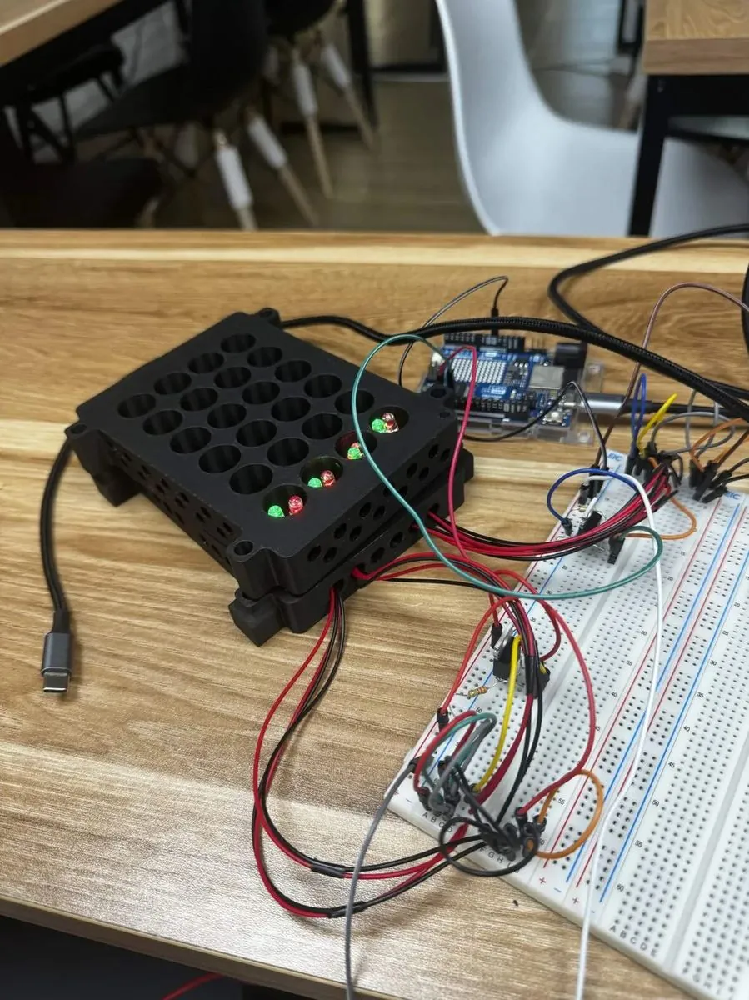
Prototype 1 Dual‑wavelength array AddedGreen and red LEDs, uncalibrated FoundUneven LEDs; stray light -
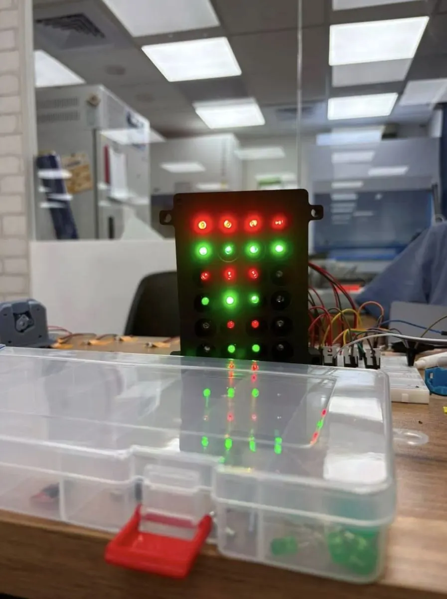
Prototype 2 Matched output, light shielding AddedLEDs matched in fours; shielding FoundTiers need PWM -
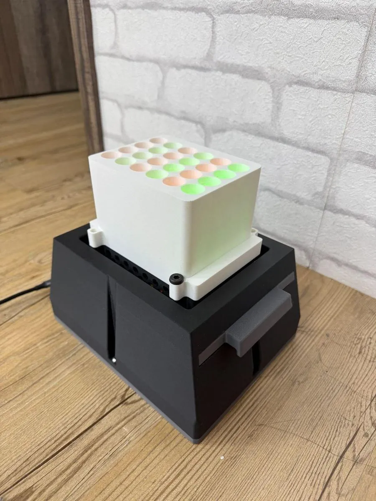
Prototype 3 Enclosed, set in code AddedHousing, code, sliders, tube holder FoundSnapped post; light leak -
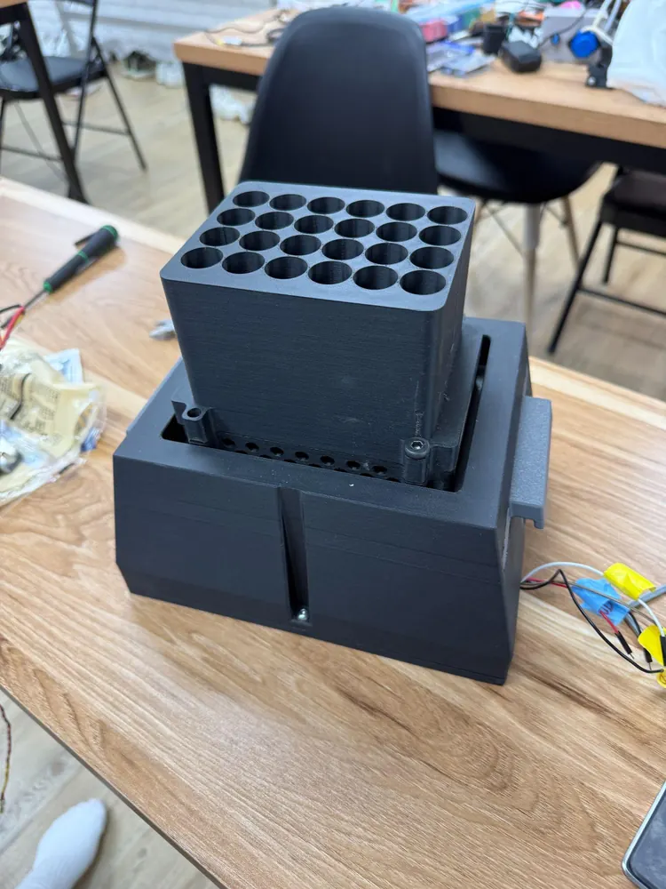
Final design Black tube holder, four screws ChangedBlack tube holder, four screws
Engineering Cycles
Prototype 1 of 3
Prototype 1: Dual‑Wavelength Array
Design
Prototype 1 carried one green and one red LED per column, uncalibrated until the layout was shown to work.
Build
Green and red LEDs sat in a 3D‑printed holder, wired to a breadboard for direct control.
Test
The green and red channels switched independently.
Learn
The layout was feasible, but two sources of variation remained:
- LEDs at the same setting gave different intensities, so the tiers were not consistent across the array.
- Ambient light reached the open array, with the largest effect at the low tier.
Prototype 2 of 3
Prototype 2: Matched Output & Light‑Shielding
Design
We measured every LED, grouped similar LEDs into matched groups per wavelength for the low, mid and high columns, and shielded the array from ambient light.
Build
Each LED was driven at 5 V, read on a lux meter in a printed sensor fixture at the same distance and orientation, and tagged by row and column (A to D, 1 to 5).
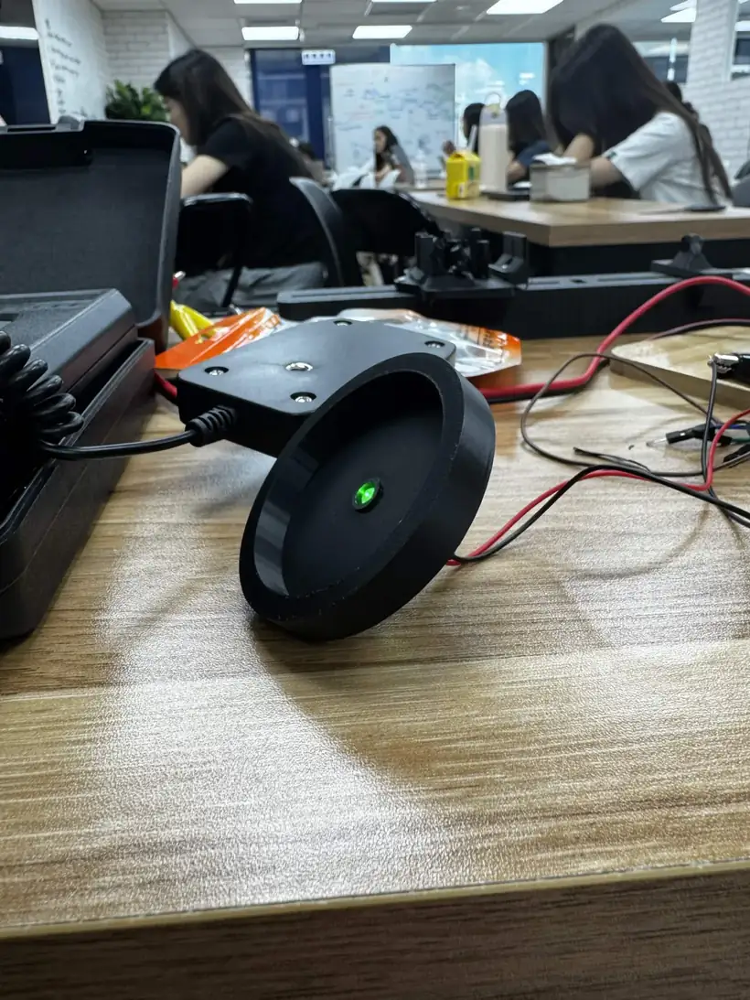
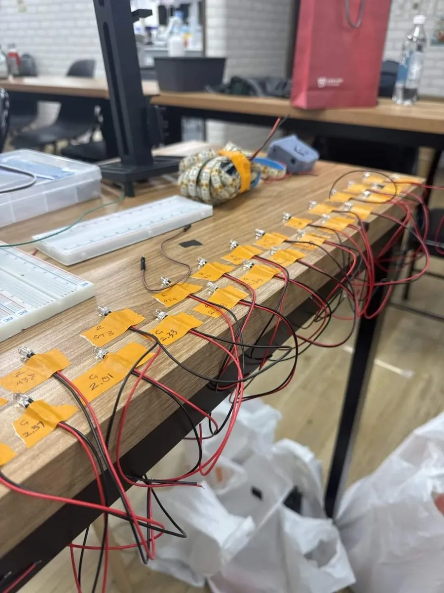
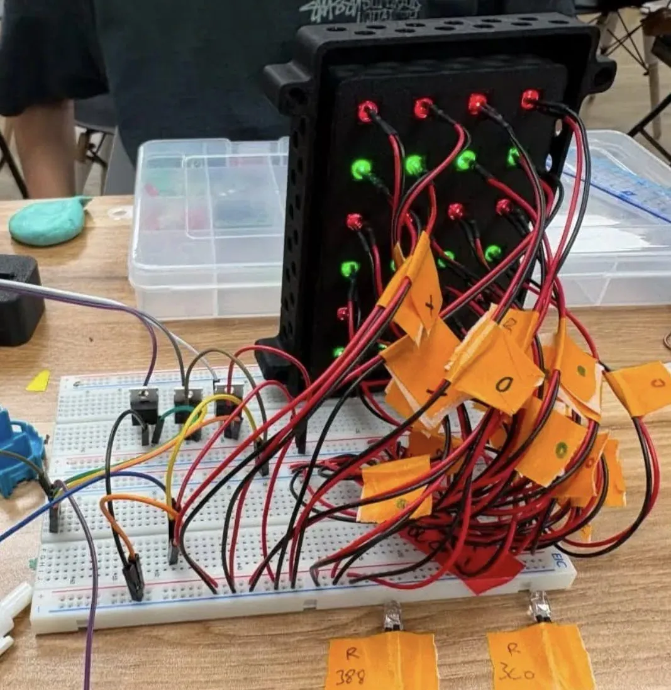
Test
All 20 green and 20 red LEDs were sorted into matched groups of four, rewired as six channels.
| Row | 1 | 2 | 3 | 4 | 5 |
|---|---|---|---|---|---|
| A | 2.54 | 2.19 | 2.33 (low) | 2.40 (high) | 2.40 (high) |
| B | 2.37 (mid) | 2.11 | 2.34 (low) | 2.48 | 2.33 (low) |
| C | 2.01 | 2.37 (mid) | 2.38 (high) | 2.42 (high) | 2.36 (mid) |
| D | 2.33 (low) | 2.05 | 2.35 (mid) | 2.45 | 2.20 |
| Row | 1 | 2 | 3 | 4 | 5 |
|---|---|---|---|---|---|
| A | 431 (high) | 371 | 424 (high) | 393 (low) | 438 |
| B | 400 | 380 | 430 (high) | 397 (low) | 360 |
| C | 410 (mid) | 410 (mid) | 360 | 416 (mid) | 397 (low) |
| D | 411 (mid) | 390 (low) | 360 | 388 | 428 (high) |
| Green low | Red low | Green mid | Red mid | Green high | Red high |
|---|---|---|---|---|---|
| 2.33 | 0.390 | 2.35 | 0.410 | 2.38 | 0.424 |
| 2.33 | 0.393 | 2.36 | 0.410 | 2.40 | 0.428 |
| 2.33 | 0.397 | 2.37 | 0.411 | 2.40 | 0.430 |
| 2.34 | 0.397 | 2.37 | 0.416 | 2.42 | 0.431 |
Learn
Before sorting, green output varied by 26% and red by 22%. After matching, each matched group differed by about 0.4–1.7% (green) and 1.5–1.8% (red). The groups stayed too close to form three tiers, especially green, whose high group, built from the LEDs left over, was less consistent. The tiers are therefore set by PWM duty cycle. Still open: exposed electronics, intensity set by hand, no fixed tube position.
Prototype 3 of 3
Prototype 3: Enclosed Software‑Controlled Instrument
Design
Matched groups and shielding are kept; four changes follow.
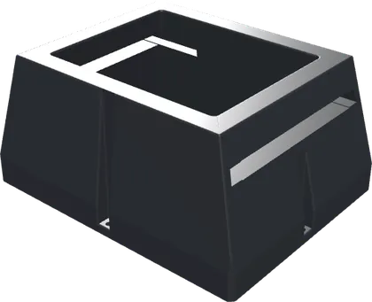
01 · LPA_BoxEnclosed electronicsA printed frame houses the wiring and perfboard.
Intensity in softwareThe three intensity tiers are PWM duty cycles set in code.
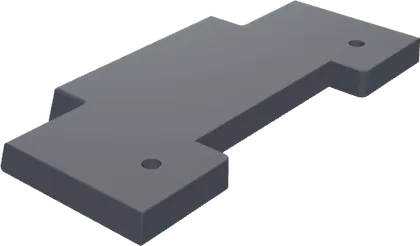
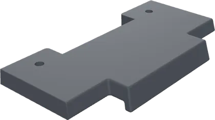
03 · Left_C, Right_CTool‑free assemblyPrinted sliders let the LPA come apart without tools.
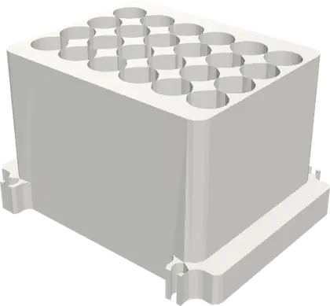
04 · Tube_HolderFixed tube positionEach culture sits at the same distance from its LED.
Build
The MOSFET stage moved from a breadboard beside the array to a perfboard beneath the LED holder, inside the enclosure.
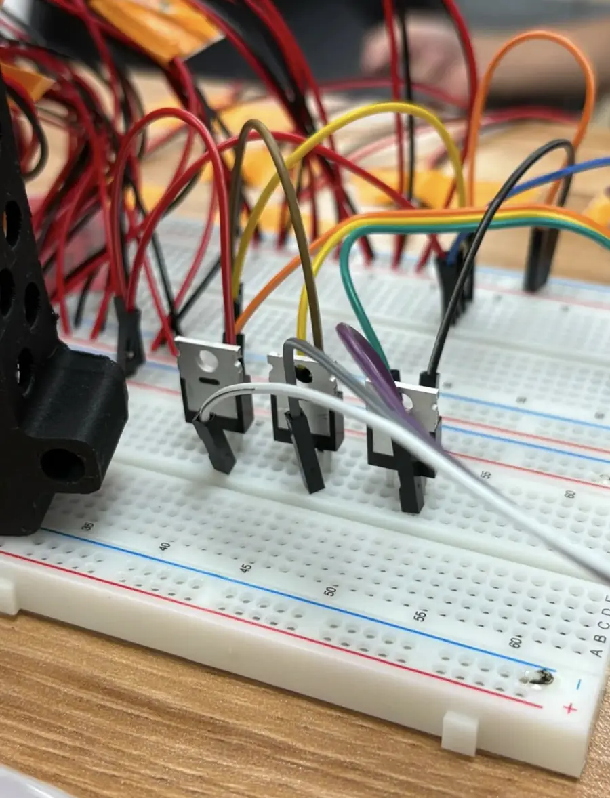
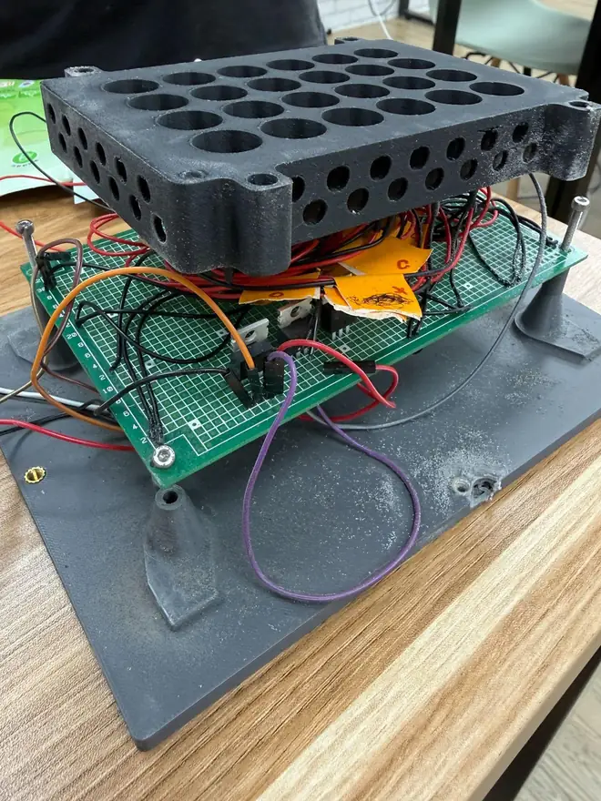
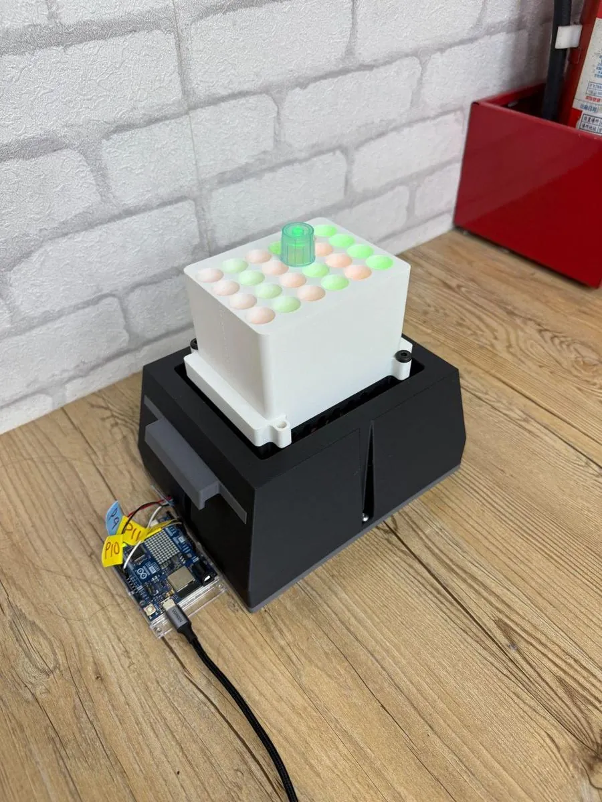
Test
Overnight on a shaker, a bottom‑plate post broke off and several wires came loose; the shaker frequency was likely too high for the print. Light also leaked through the white tube holder into adjacent wells, affecting that run’s data.
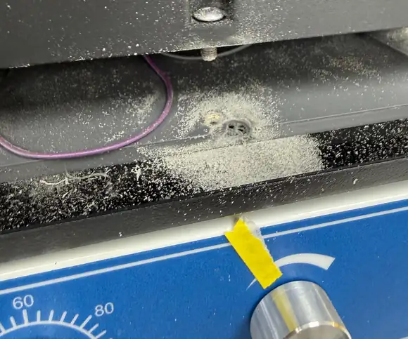
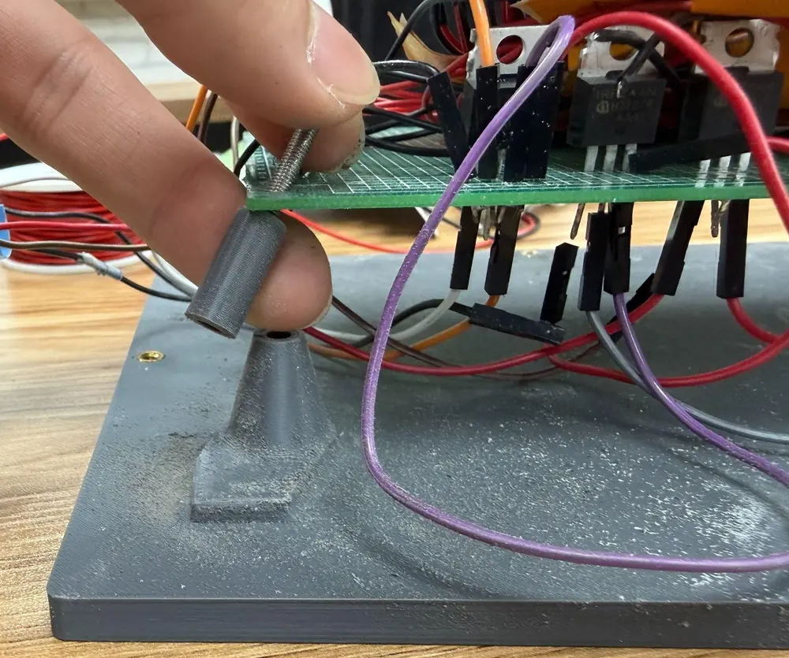
Learn
Base reinforcement at four points
All four screw positions are now used, up from two, and every solder joint is reinforced. The rebuilt base has not been re‑tested on a shaker.
Light blocking between wells
The tube holder is now black, with walls raised from 2 loops to 4.
Final Design
The final LPA is a reinforced base plate, housing, internal perfboard, sliders and a black tube holder.
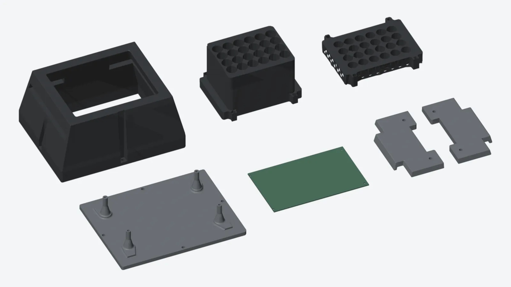
1 2 3 4 5 6 7Key Specifications
| Specification | Final design |
|---|---|
| Array | 4 × 6 layout; 24 cultures total |
| Light conditions | 2 wavelengths × 3 intensity tiers |
| Green channel | ~535 nm |
| Red channel | ~670 nm |
| Intensity control | PWM through 3 MOSFET channels |
| Shielding | Enclosed from ambient light |
| Tube holder | Fixed tube position above LEDs |
| Assembly | Tool‑free printed sliders |
Dimensions
| Dimension | Final design |
|---|---|
| Footprint | 211 × 164 mm; 217 mm across sliders |
| Housing height | 108 mm |
| Tube holder height | +80 mm |
| LED grid | 4 × 6 on 18 mm pitch |
| Tube bores | 24 × 17 mm |
| Wall between bores | 1 mm |
Limitations
Fixed dose, no feedback
The dose is set before the run and does not respond to the culture; closed‑loop control would require added feedback.
Wavelengths assumed, not measured
The wavelengths are assumed from published CcaS/CcaR values; our own LEDs have not been characterized.
No correction for drift
Output drift as LEDs warm up or age is not corrected.
Photometric units
Lux is weighted for human vision, so green and red readings are not equivalent biological doses; photon flux is required.
Proof of Concept
No end‑to‑end culture run under the LPA is on record yet.
The LPA was built for one test, at one wavelength across the three tiers: whether protectant production changes with the intensity applied.
Reproduction
Materials List
Bill of materials12 lines, costing incomplete
Twelve LEDs of each colour, picked from twenty measured (Cycle 2, Test); costing is kept in the LPA cost sheet.
| Component | Part number / spec | Qty | Unit cost (TWD) | Total (TWD) | Supplier |
|---|---|---|---|---|---|
| Green LED | — | 12 | — | — | — |
| Red LED | — | 12 | — | — | — |
| MOSFET | — | 3 | — | — | — |
| Microcontroller | Arduino Uno R4 WiFi | 1 | — | — | — |
| Perf board | 160 × 100 mm in the CAD | 1 | — | — | — |
| Power supply | 5 V | 1 | — | — | — |
| Hook‑up wire | 20 AWG jumpers, 10 cm | 12 | — | — | — |
| Solder | — | 1 roll | — | — | — |
| Heat‑set inserts | — | — | — | — | — |
| LED holder inserts | — | — | — | — | — |
| Screws | — | — | — | — | — |
| Filament, PLA | Bambu Lab PLA Basic, 1.75 mm, 1 kg spool | 1 | 355.99 | — | — |
| Total | — |
Printed parts6 parts
| Part | Material | Filament (g) | Infill |
|---|---|---|---|
| LPA_Box | Black PLA | — | — |
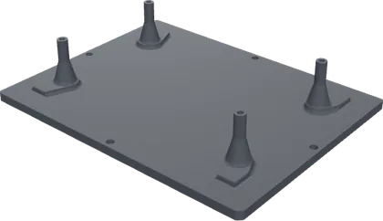 Bottom_Plate | Grey PLA | — | — |
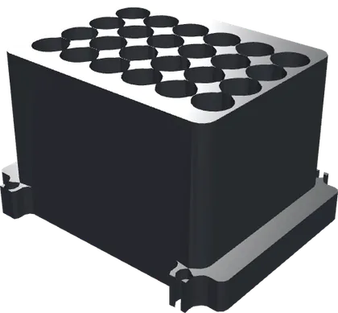 Tube_Holder | Black PLA, 4 wall loops (Cycle 3, Learn) | — | — |
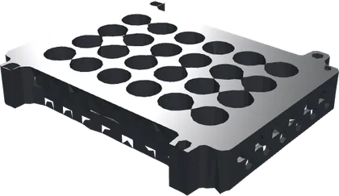 LED_Holder | Black PLA | — | — |
| Left_C | Grey PLA | — | — |
| Right_C | Grey PLA | — | — |
Equipment
Lux meter, 3D printer, soldering iron, calipers and the printed sensor fixture for LED matching.
Downloadable Blueprints
Numbered as in the CAD parts drawing: STL meshes in millimeters, in the instrument's own coordinates, so they open assembled.
The six STLsone per printed part
- 1Base Plate
Part
Bottom_Plate - 2Left
Part
Left_C - 3Right
Part
Right_C - 4Box
Part
LPA_Box - 5LPA Body
Part
LED_Holder - 6Tube Insert
Part
Tube_Holder
References
Illuminating a plate of cultures from below with per‑well control is the Light Plate Apparatus pattern from the optogenetics literature; our LPA follows it and is named after it. We added the dual‑wavelength column layout, LEDs matched by measured output, and an enclosure sized for our tubes.
The CcaS/CcaR green/red switch is also from the literature. Our dose target comes from the Castillo‑Hair characterization of that system, whose half‑maximal point is 4.66 µmol m−2 s−1.